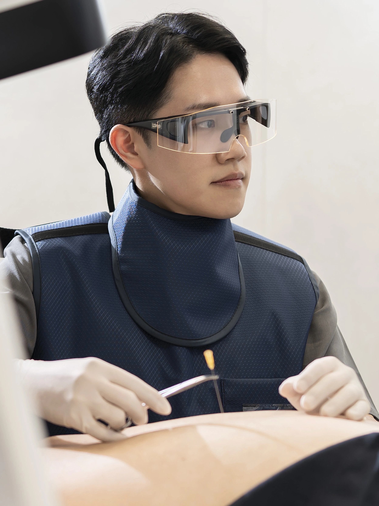
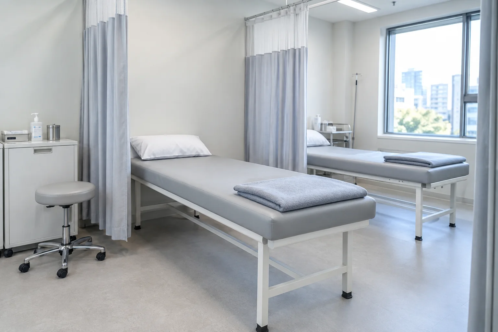

신체 균형을 되찾는
여의도기통찬 자율신경 주사치료(SNEPI)
이유 없이 계속되는 불편함, 자율신경의 신호일 수 있습니다.
자율신경계는 교감신경과 부교감신경의 균형을 통해
혈류, 호흡, 소화, 체온 등 우리 몸의 다양한 기능을 조절합니다.
만성적인 스트레스와 수면 부족, 잘못된 자세 등으로
척추 주변 근육의 긴장이 지속되면 교감신경이 과도하게 자극될 수 있습니다.
이로 인해 만성 통증뿐 아니라 두통, 어지럼증, 불면, 두근거림, 소화불량, 만성 피로 등 여러 증상이 함께 나타날 수 있습니다.
여의도기통찬에서는 척추·근육·신경의 연관성과 자율신경의 상태까지 함께 살펴
증상의 원인을 찾아 치료합니다.

CLINIC POINT
여의도기통찬 자율신경치료의 핵심 포인트
몸 전체를 함께 보는 통합적 접근
통증이 나타나는 부위만 보지 않고, 척추·신경·근육의 연관성을 함께 살펴 증상의 원인을 세심하게 찾아갑니다.
과흥분된 교감신경의 회복을 위한
맞춤 치료
교감신경이 과도하게 자극되는 원인을 살펴, 긴장된 근육과 신경 자극 부위를 찾아 환자의 상태에 맞게 치료합니다.
원인 모를 만성 통증과 전신 증상까지
검사에서 뚜렷한 원인을 찾기 어려웠던 만성 통증은 물론, 두통·불면·어지럼증·만성 피로 등 다양한 전신 증상을 함께 살펴 치료합니다.
DIFFERENT
여의도기통찬 자율신경 주사치료(SNEPI)의 원칙
원인 모를 증상도 가볍게 넘기지 않는 집요함
원인이 잘 보이지 않는 증상도 가볍게 넘기지 않고, 척추·근육·신경과 자율신경의 상태를 살펴
증상의
원인을 끝까지 찾아갑니다.
다른 의사들을 교육하며 쌓아온
통증·신경 치료 경험
통증·신경 치료에 대한 임상 경험과 지속적인 연구·교육을 이어가고 있으며, 현재는 다른 의사들을 대상으로 통증 치료의 술기와 이론을 직접 강의하고 있습니다.
그 경험을 바탕으로 환자마다 다른 증상과 원인을 살펴 맞춤 치료를 시행합니다.
YEOUIDO GITONGCHAN
자율신경 회복주사(SNEPI)
이유 없이 계속되는 불편함, 자율신경의 신호일 수 있습니다.
만성 피로 · 소화불량 · 두근거림 · 불면 · 어지럼증
서로 다른 증상처럼 보여도, 그 뒤에는
과흥분된 교감신경이 숨어 있을 수 있습니다.
깊은 긴장을 풀어 몸이 다시 편안한 리듬을 찾도록 돕습니다.
- 자율신경 균형
- 컨디션 개선
- 비스테로이드
INDICATION
주요 적용 증상
질환별 특성과 치료가 필요한 부위를 안내해드립니다.
